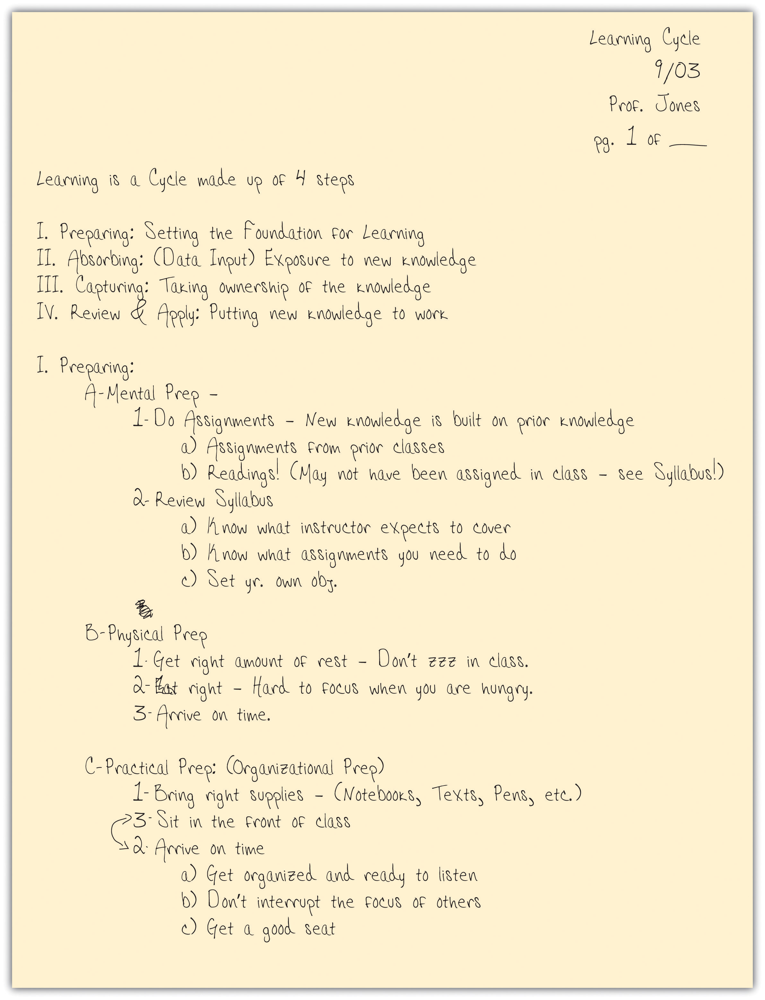
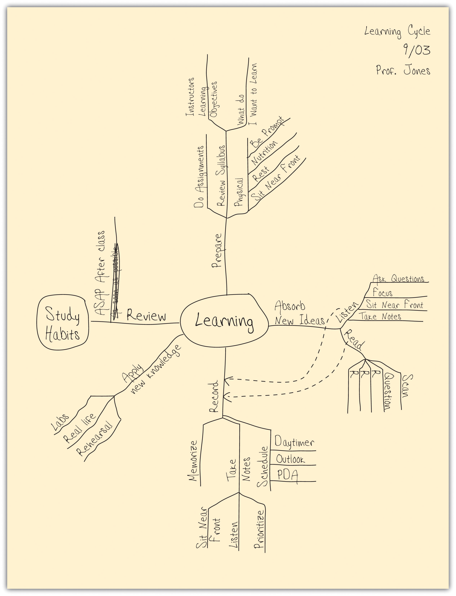
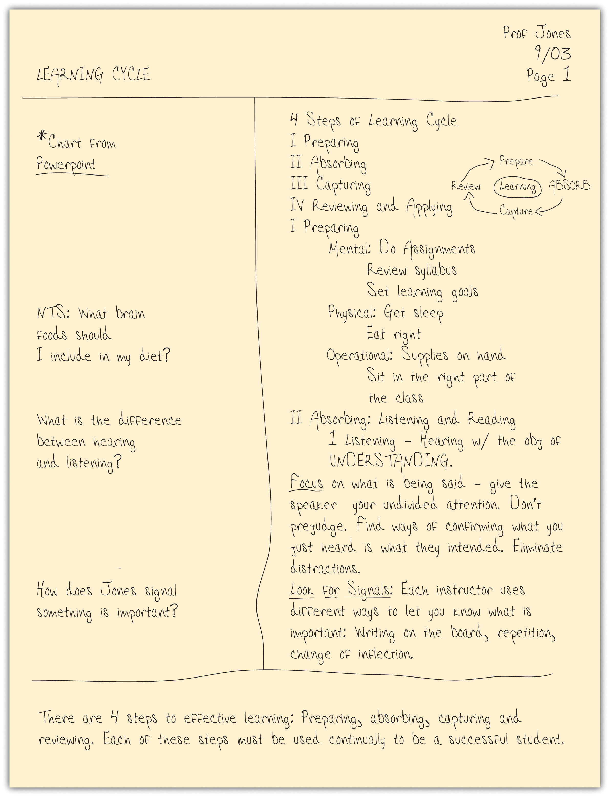

Assess your present knowledge and attitudes.
| Yes | Unsure | No | |
|---|---|---|---|
| 1. I am satisfied with my grades. | |||
| 2. I usually feel well prepared for classes. | |||
| 3. I usually understand what is going on in class. | |||
| 4. I find it easy to stay focused in class. | |||
| 5. I am not shy or self-conscious about asking questions. | |||
| 6. I learn from recorded lectures and podcasts. | |||
| 7. I take useful notes in class. | |||
| 8. I go to the instructor’s office when I have a question about an assignment. | |||
| 9. I can successfully study for a test from the notes I have taken. | |||
| 10. I use different note-taking methods in different classes. | |||
| 11. I do not have trouble remembering facts and ideas. | |||
| 12. I retain useful information after an exam. |
Think about how you answered the questions above. Be honest with yourself. On a scale of 1 to 10, how would you rate your level of academic achievement at this time?
| A poor student | An excellent student | |||||||||||||||||
|---|---|---|---|---|---|---|---|---|---|---|---|---|---|---|---|---|---|---|
| 1 | 2 | 3 | 4 | 5 | 6 | 7 | 8 | 9 | 10 | |||||||||
In the following list, circle the three most important areas in which you think you can improve:
Are there other areas in which you can improve your academic performance? Write down other things you feel you need to work on.
__________________________________________________________________
__________________________________________________________________
__________________________________________________________________
__________________________________________________________________
Here’s what we’ll work on in this chapter:
As you embark on your college career, you have found yourself in an environment like no other. You soon will discover the new social structure, you may be invigorated by a new freedom, and you may be daunted by the number of options you have for activities. We cover these nonacademic aspects of college life starting in Chapter 9 "The Social World of College". But for now, consider some of the differences between college classes and what you likely were used to in high school. These differences are important because they demand you change your behavior if you want to be a successful student.
Table 4.1 Differences between High School and College Classes
| In High School | In College |
|---|---|
| Your teacher would guide you and let you know when you were falling behind. | You are expected to take responsibility for your academic success. |
| Your teacher would take attendance and report you when you were absent; the teacher would help you make up the material you missed. | Your instructor rarely takes attendance but expects you to be in class and understand the material. |
| Your teacher would write assignments on the board and remind you to complete them. | It is up to you to read, save, and follow the course syllabus and to know what material you must read and understand and by when. Since the syllabus makes this clear, instructors will rarely remind you of assignment due dates. |
| Each class would typically meet three to five times each week with minimal homework each night. | Each class meets less frequently but requires much more work from each student. You should generally count on doing two to three hours of studying for each hour of class. What seems like an eight-hour work day may quickly become fourteen hours or more of academic work. Take responsibility for budgeting your time and not falling behind. In college it is much harder to catch up if you do get behind. |
| High school teachers are passionate about guiding their students and teaching them to learn. | College instructors are often more passionate about their subject matter than they are about their teaching. But you can tap into their passion for what they are talking about and guide your own learning by asking questions, seeking advice during office hours, and participating in class discussions. |
| Daily homework assignments and unit quizzes contributed heavily to your grade. Oftentimes a teacher would offer extra credit opportunities to give students a chance to make up for lapses along the way. | Your grade in a course may be determined primarily by one or two exams and a long-term project or paper. A subpar performance on a single exam or paper can really drag your grades down. Identify the assignments on the syllabus and get to work on them early and consistently. Don’t put off assignments or studying for tests until the last minute! In college, extra credit is not an option to fall back on! |
| You were told what you should study and when. You followed a predetermined curriculum set by state and local officials. Even your parents and guidance counselors had a major say in your “elective” choices. | You determine what you want to learn. It is your education—not someone else’s. Find your passion and follow it! You will be a much better student if you do. |
Too many students try to get the grade just by going to class, maybe a little note taking, and then cramming through the text right before an exam they feel unprepared for. Sound familiar? This approach may have worked for you in high school where tests and quizzes were more frequent and teachers prepared study guides for you, but colleges require you to take responsibility for your learning and to be better prepared.
Most students simply have not learned how to study and don’t understand how learning works. As we discussed in Chapter 1 "You and Your College Experience", learning is actually a cycle of four steps: preparing, absorbing, capturing, and reviewing. When you get in the habit of paying attention to this cycle, it becomes relatively easy to study well. But you must use all four steps.
This chapter focuses on listeningPurposefully focusing on what a speaker is saying with the objective of understanding., a key skill for learning new material, and note taking, the most important skill in the capturing phase of the cycle. These skills are closely related. Good listening skills make you a better note taker, and taking good notes can help you listen better. Both are key study skills to help you do better in your classes.
Figure 4.2 The Learning Cycle

A professional athlete wouldn’t take the field without warming up first. An effective student won’t go to a class without preparing for it first. To get the most out of a class, you need to get yourself in the right frame of mind. This does not take a lot of time, but it greatly increases your ability to listen actively and take good notes.
Like a good athlete, first you need to get psyched. Clearly visualize your goals. Thinking about the following questions may help:
Go to class with confidence. The best way to achieve this is to start early and be sure you’ve completed any assignment the instructor gave you in the last class. Think about how today’s material will tie into what you’ve already learned. You should also review the course syllabusAn outline of the course from the instructor, which covers the course objectives, the material to be covered in each class, and often assignments. to see what the instructor expects to cover in the class and how it relates to what you have learned so far.
Be physically prepared, too:
Now, take a deep breath, focus on the instructor, and listen and learn!
Are you a good listener? Most of us like to think we are, but when we really think about it, we recognize that we are often only half listening. We’re distracted, thinking about other things, or formulating what we are going to say in reaction to what we are hearing before the speaker has even finished. Effective listening is one of the most important learning tools you can have in college. And it is a skill that will benefit you on the job and help your relationships with others. Listening is nothing more than purposefully focusing on what a speaker is saying with the objective of understanding.
This definition is straightforward, but there are some important concepts that deserve a closer look. “Purposefully focusing” implies that you are actively processing what the speaker is saying, not just letting the sounds of their voice register in your senses. “With the objective of understanding” means that you will learn enough about what the speaker is saying to be able to form your own thoughts about the speaker’s message. Listening is an active process, as opposed to hearing, which is passive.
You listen to others in many situations: to interact with friends, to get instructions for a task, or to learn new material. There are two general types of listening situations: where you will be able to interact freely with the speaker (everyday conversations, small discussion classes, business meetings) and where interaction is limited (lectures and Webcasts).
In interactive situations, you should apply the basic principles of active listeningA strategy for listening effectively in interactive situations by focusing on what is being said, confirming that you heard the right message, asking for any needed clarification, watching for nonverbal messages, and listening for requests. (see “Principles of Active Listening”). These are not hard to understand, but they are hard to implement and require practice to use them effectively.
Think of a person you consider an excellent listener. Picture that person clearly in your mind. Focus on what she does, not what they she is saying. Describe what actions and postures she uses to show she is listening. Put this list on the left-hand side of the page.
Think of a person you consider a poor listener. Picture that person clearly in your mind. Focus on what he does, not what he is saying. Describe what actions and postures he uses to show he is not listening. Put this list on the right-hand side of the page.
Now compare these lists with your own behavior. How many of the body language signals from each side do you think you exhibit? How can you add more of the left column’s attitudes and actions to your own behaviors? How can you control those behaviors you recognize in yourself from the right column?
Listening in a classroom or lecture hall to learn can be challenging because you are limited by how—and how much—you can interact with an instructor during the class. The following strategies help make listening at lectures more effective and learning more fun.
A note about tape-recording lectures: You may want to record a lecture to double-check what you heard in class, but it’s usually not a good idea. Depending on a recording may lead you to listen less effectively and think less actively. Additionally, many instructors do not allow students to record their lectures, so recording is usually not even an option.
Are you shy about asking questions? Do you think that others in the class will ridicule you for asking a dumb question? Students sometimes feel this way because they have never been taught how to ask questions. Practice these steps, and soon you will be on your way to customizing each course to meet your needs and letting the instructor know you value the course.
List two things you should do before the class to prepare yourself for active listening.
__________________________________________________________________
__________________________________________________________________
Where should you sit in the classroom? Why?
__________________________________________________________________
__________________________________________________________________
What are some of the ways instructors signal important material?
__________________________________________________________________
__________________________________________________________________
__________________________________________________________________
Everybody takes notes, or at least everybody claims to. But if you take a close look, many who are claiming to take notes on their laptops are actually surfing the Web, and paper notebooks are filled with doodles interrupted by a couple of random words with an asterisk next to them reminding you that “This is important!” In college, these approaches will not work. In college, your instructors expect you to make connections between class lectures and reading assignments; they expect you to create an opinion about the material presented; they expect you to make connections between the material and life beyond college. Your notes are your road maps for these thoughts. Do you take good notes? After learning to listen, note taking is the most important skill to ensure your success in a class.
Effective note taking is important because it
There are various forms of taking notes, and which one you choose depends on both your personal style and the instructor’s approach to the material. Each can be used in a notebook, index cards, or in a digital form on your laptop. No specific type is good for all students and all situations, so we recommend that you develop your own style, but you should also be ready to modify it to fit the needs of a specific class or instructor. To be effective, all of these methods require you to listen actively and to think; merely jotting down words the instructor is saying will be of little use to you.
Table 4.2 Note-Taking Methods
| Method | Description | When to Use |
|---|---|---|
| Lists | A sequential listing of ideas as they are presented. Lists may be short phrases or complete paragraphs describing ideas in more detail. | This method is what most students use as a fallback if they haven’t learned other methods. This method typically requires a lot of writing, and you may find that you are not keeping up with the professor. It is not easy for students to prioritize ideas in this method. |
| Outlines | The outline method places most important ideas along the left margin, which are numbered with roman numerals. Supporting ideas to these main concepts are indented and are noted with capital letters. Under each of these ideas, further detail can be added, designated with an Arabic number, a lowercase letter, and so forth. | A good method to use when material presented by the instructor is well organized. Easy to use when taking notes on your computer. |
| Concept Maps | When designing a concept map, place a central idea in the center of the page and then add lines and new circles in the page for new ideas. Use arrows and lines to connect the various ideas. | Great method to show relationships among ideas. Also good if the instructor tends to hop from one idea to another and back. |
| Cornell Method | The Cornell method uses a two-column approach. The left column takes up no more than a third of the page and is often referred to as the “cue” or “recall” column. The right column (about two-thirds of the page) is used for taking notes using any of the methods described above or a combination of them. After class or completing the reading, review your notes and write the key ideas and concepts or questions in the left column. You may also include a summary box at the bottom of the page, in which to write a summary of the class or reading in your own words. | The Cornell method can include any of the methods above and provides a useful format for calling out key concepts, prioritizing ideas, and organizing review work. Most colleges recommend using some form of the Cornell method. |
Figure 4.3 The List Method of Note Taking

The list method is usually not the best choice because it is focused exclusively on capturing as much of what the instructor says as possible, not on processing the information. Most students who have not learned effective study skills use this method, because it’s easy to think that this is what note taking is all about. Even if you are skilled in some form of shorthand, you should probably also learn one of the other methods described here, because they are all better at helping you process and remember the material. You may want to take notes in class using the list method, but transcribe your notes to an outline or concept map method after class as a part of your review process. It is always important to review your notes as soon as possible after class and write a summary of the class in your own words.
Figure 4.4 The Outline Method of Note Taking
The advantage of the outline method is that it allows you to prioritize the material. Key ideas are written to the left of the page, subordinate ideas are then indented, and details of the subordinate ideas can be indented further. To further organize your ideas, you can use the typical outlining numbering scheme (starting with roman numerals for key ideas, moving to capital letters on the first subordinate level, Arabic numbers for the next level, and lowercase letters following.) At first you may have trouble identifying when the instructor moves from one idea to another. This takes practice and experience with each instructor, so don’t give up! In the early stages you should use your syllabus to determine what key ideas the instructor plans to present. Your reading assignments before class can also give you guidance in identifying the key ideas.
If you’re using your laptop computer for taking notes, a basic word processing application (like Microsoft Word or Works) is very effective. Format your document by selecting the outline format from the format bullets menu. Use the increase or decrease indent buttons to navigate the level of importance you want to give each item. The software will take care of the numbering for you!
After class be sure to review your notes and then summarize the class in one or two short paragraphs using your own words. This summary will significantly affect your recall and will help you prepare for the next class.
Figure 4.5 The Concept Map Method of Note Taking
This is a very graphic method of note-taking that is especially good at capturing the relationships among ideas. Concept maps harness your visual sense to understand complex material “at a glance.” They also give you the flexibility to move from one idea to another and back easily (so they are helpful if your instructor moves freely through the material).
To develop a concept map, start by using your syllabus to rank the ideas you will listen to by level of detail (from high-level or abstract ideas to detailed facts). Select an overriding idea (high level or abstract) from the instructor’s lecture and place it in a circle in the middle of the page. Then create branches off that circle to record the more detailed information, creating additional limbs as you need them. Arrange the branches with others that interrelate closely. When a new high-level idea is presented, create a new circle with its own branches. Link together circles or concepts that are related. Use arrows and symbols to capture the relationship between the ideas. For example, an arrow may be used to illustrate cause or effect, a double-pointed arrow to illustrate dependence, or a dotted arrow to illustrate impact or effect.
As with all note-taking methods, you should summarize the chart in one or two paragraphs of your own words after class.
Figure 4.6 The Cornell Method of Note Taking
The Cornell methodA classic method of taking organized class notes using a two-column approach that highlights key ideas. was developed in the 1950s by Professor Walter Pauk at Cornell University. It is recommended by most colleges because of its usefulness and flexibility. This method is simple to use for capturing notes, is helpful for defining priorities, and is a very helpful study tool.
The Cornell method follows a very specific format that consists of four boxes: a header, two columns, and a footer.
The header is a small box across the top of the page. In it you write identification information like the course name and the date of the class. Underneath the header are two columns: a narrow one on the left (no more than one-third of the page) and a wide one on the right. The wide column, called the “notes” column, takes up most of the page and is used to capture your notes using any of the methods outlined earlier. The left column, known as the “cue” or “recall” column, is used to jot down main ideas, keywords, questions, clarifications, and other notes. It should be used both during the class and when reviewing your notes after class. Finally, use the box in the footer to write a summary of the class in your own words. This will help you make sense of your notes in the future and is a valuable tool to aid with recall and studying.
Some students like to use index cards to take notes. They actually lend themselves quite well to the Cornell method. Use the “back” or lined side of the card to write your notes in class. Use one card per key concept. The “front” unlined side of the card replaces the left hand “cue” column. Use it after class to write keywords, comments, or questions. When you study, the cards become flash cards with questions on one side and answers on the other. Write a summary of the class on a separate card and place it on the top of the deck as an introduction to what was covered in the class.
I used to tape my lecture classes so I could fill in my sketchy notes afterward. Now that I’m using the Cornell system, my notes are complete and organized in much less time. And my regular five-minute reviews make learning almost painless. No more taping and listening twice.
a student at Southern Methodist University
You will have noticed that all methods end with the same step: reviewing your notes as soon as possible after class. Any review of your notes is helpful (reading them, copying them into your computer, or even recasting them using another note-taking method). But THINK! Make your review of notes a thoughtful activity, not a mindless process. When you review your notes, think about questions you still have and determine how you will get the answers. (From the next class? Studying with a friend? Looking up material in your text or on the net?) Examine how the material applies to the course; make connections with notes from other class sessions, with material in your text, and with concepts covered in class discussions. Finally, it’s fun to think about how the material in your notes applies to real life. Consider this both at the very strategic level (as in “What does this material mean to me in relation to what I want to do with my life?”) as well as at a very mundane level (as in “Is there anything cool here I can work into a conversation with my friends?”).
Some instructors hand out or post their notes or their PowerPoint slides from their lectures. These handouts should never be considered a substitute for taking notes in class. They are a very useful complement and will help you confirm the accuracy of your notes, but they do not involve you in the process of learning as well as your own notes do. After class, review your notes with highlighter in hand and mark keywords and ideas in your notes. This will help you write the summary of the class in your own words.
Regardless of what note-taking method you choose, there are some note-taking habits you should get into for all circumstances and all courses:
Choose one of your classes where you normally take notes. Make a conscious effort to use the Cornell method with either the outline or concept map method for taking your notes. Follow as many steps listed previously as possible. Now compare these notes with those you took in the previous class. Are your new notes more useful? What did you like about taking notes this way? What are some of the things you need to work on improving? (Remember this will get much easier with more practice.) Write your thoughts here.
________________________________________________________________________________
________________________________________________________________________________
________________________________________________________________________________
________________________________________________________________________________
________________________________________________________________________________
________________________________________________________________________________
Clearly the best way to learn class material is to be at the class and to take your own notes. In college, regular attendance is expected. But life happens. On occasion, you may have to miss a class or lecture. When this happens, here are some strategies you can use to make up for it:
Class is over, and you have a beautiful set of notes in your spiral notebook or saved in your laptop. You have written the summary of the class in your own words. Now what?
Start by organizing your notes. We recommend you use a three-ring binder for each of your subjects. Print your notes if you used a computer. If you used note cards, insert them in plastic photo holders for binders. Group all notes from a class or unit together in a section; this includes class notes, reading notes, and instructor handouts. You might also want to copy the instructor’s syllabus for the unit on the first page of the section.
Next, spend some time linking the information across the various notes. Use the recall column in your notes to link to related information in other notes (e.g., “See class notes date/page”).
If you have had a quiz or test on the unit, add it to your binder, too, but be sure to write out the correct answer for any item you missed. Link those corrections to your notes, too.
Use this opportunity to write “notes on your notes.” Review your summary to see if it still is valid in light of your notes on the reading and any handouts you may have added to your notes package.
You don’t need to become a pack rat with your notes. It is fairly safe to toss them after the end of a course except in the following cases:
Name two advantages of the Cornell system over the list method of note taking.
__________________________________________________________________
__________________________________________________________________
Describe the benefits of—and potential problems with—taking class notes on a laptop.
__________________________________________________________________
__________________________________________________________________
__________________________________________________________________
__________________________________________________________________
List at least three ways to make up for missing notes because you miss a class.
__________________________________________________________________
__________________________________________________________________
__________________________________________________________________
__________________________________________________________________
Up to now we have covered how to capture material in your notes. The rest of this chapter is dedicated to strategies for recording ideas and facts in your memory.
Have you ever gone into an exam you have studied for and drawn a blank on a particular question? Have you ever walked into a room only to forget for a moment why you went there? Have you ever forgotten where you left your keys? How about finding yourself in a conversation with someone whose name you can’t remember? The fact is, memory fails everyone from time to time. It is not surprising that students, with a huge amount of information they must commit to memory (not to mention frequent distractions and interruptions), are often frustrated by their memory.
Let’s start by taking some of the pressure off you. You will not be required to memorize everything your instructor says in a class—nor should you try to. There is way too much to capture. People speak at a rate of 100 to 150 words per minute. An average 50-minute lecture may contain around 7,500 words. By listening effectively and taking notes, your job is to distill the main ideas and a few keywords. These are the things you should choose to memorize.
In your early and high school education, memorization was a key aspect of learning. You memorized multiplication tables, the names of the states, and vocabulary words. Memorized facts ensured your success on multiple-choice questions. In college, however, most of your work is focused on understanding the material in depth. Remembering the year of the 9/11 attack (2001) is far less important than grasping the impact of that attack on American foreign policy. Understanding themes and ideas and being able to think critically about them is really the key to your success in college learning. For more on critical thinking skills, see Chapter 3 "Thinking about Thought". Although memorization is not the primary key to success, having a good memory is important to capture ideas in your mind, and it helps tremendously in certain subjects like sciences and foreign languages.
MemoryThe process of storing and retrieving information. is the process of storing and retrieving information. Think of a computer. In many ways it is an electronic model of the human memory. A computer stores, retrieves, and processes information similarly to how the human mind does. Like the human version, there are two types of memory: short-term or active memory (RAM in the computer) and long-term or passive memory (the computer’s hard drive). As its name suggests, short-term or active memory is made up of the information we are processing at any given time. Short-term memory involves information being captured at the moment (such as listening in class) as well as from information retrieved from our passive memory for doing complex mental tasks (such as thinking critically and drawing conclusions). But short-term memory is limited and suffers from the passing of time and lack of use. We begin to forget data within thirty seconds of not using it, and interruptions (such as phone calls or distractions) require us to rebuild the short-term memory structure—to get “back on task.” Learn more about multitasking in Chapter 6 "Preparing for and Taking Tests". To keep information in our memory, we must either use it or place it into our long-term memory (much like saving a document on your computer).
How we save information to our long-term memory has a lot to do with our ability to retrieve it when we need it at a later date. Our mind “saves” information by creating a complex series of links to the data. The stronger the links, the easier it is to recall. You can strengthen these links by using the following strategies. You should note how closely they are tied to good listening and note-taking strategies.
Choose a specific fact from each of your classes on a given day. Now find a way of working that information into your casual conversations during the rest of the day in a way that is natural. Can you do it? What effect do you think that will have on your memory of that information?
Read the following list for about twenty seconds. After you have read it, cover it and write down all the items you remember.
| Arch | Pen | |||
| Chowder | Maple | |||
| Airplane | Window | |||
| Kirk | Scotty | |||
| Paper clip | Thumb drive | |||
| Column | Brownies | |||
| Oak | Door | |||
| Subway | Skateboard | |||
| Leia | Cedar | |||
| Fries | Luke |
How many were you able to recall? Most people can remember only a fraction of the items.
Now read the following list for about twenty seconds, cover it, and see how many you remember.
| Fries | Skateboard | |||
| Chowder | Subway | |||
| Brownies | Luke | |||
| Paper clip | Leia | |||
| Pen | Kirk | |||
| Thumb drive | Scotty | |||
| Oak | Column | |||
| Cedar | Window | |||
| Maple | Door | |||
| Airplane | Arch |
Did your recall improve? Why do you think you did better? Was it easier? Most people take much less time doing this version of the list and remember almost all the terms. The list is the same as the first list, but the words have now been grouped into categories. Use this grouping method to help you remember lists of mixed words or ideas.
What do the names of the Great Lakes, the makings of a Big Mac, and the number of days in a month have in common? They are easily remembered by using mnemonic devices. MnemonicsTricks for memorizing lists and data. (pronounced neh-MA-nicks) are tricks for memorizing lists and data. They create artificial but strong links to the data, making recall easier. The most commonly used mnemonic devices are acronyms, acrostics, rhymes, and jingles.
AcronymsA word formed from the initial letters of words in a phrase or series of words, such as “USA” for “United States of America.” are words or phrases made up by using the first letter of each word in a list or phrase. Need to remember the names of the Great Lakes? Try the acronym HOMES using the first letter of each lake:
To create an acronym, first write down the first letters of each term you need to memorize. Then rearrange the letters to create a word or words. You can find acronym generators online (just search for “acronym generator”) that can help you by offering options. Acronyms work best when your list of letters includes vowels as well as consonants and when the order of the terms is not important. If no vowels are available, or if the list should be learned in a particular order, try using an acrostic instead.
AcrosticsA mnemonic method in which words in a sentence or phrase work as memory aids for something beginning with the same first letters in the acrostic. are similar to acronyms in that they work off the first letter of each word in a list. But rather than using them to form a word, the letters are represented by entire words in a sentence or phrase. If you’ve studied music, you may be familiar with “Every Good Boy Deserves Fudge” to learn the names of the notes on the lines of the musical staff: E, G, B, D, F. The ridiculous and therefore memorable line “My Very Educated Mother Just Served Us Nine Pizzas” was used by many of us to remember the names of the planets (at least until Pluto was downgraded):
| My | Mercury |
| Very | Venus |
| Educated | Earth |
| Mother | Mars |
| Just | Jupiter |
| Served | Saturn |
| Us | Uranus |
| Nine | Neptune |
| Pizzas | Pluto |
To create an acrostic, list the first letters of the terms to be memorized in the order in which you want to learn them (like the planet names). Then create a sentence or phrase using words that start with those letters.
RhymesShort verses used to remember data. are short verses used to remember data. A common example is “In fourteen hundred and ninety-two, Columbus sailed the ocean blue.” Need to remember how many days a given month has? “Thirty days hath September, April, June, and November…,” and so forth. Writing rhymes is a talent that can be developed with practice. To start, keep your rhymes short and simple. Define the key information you want to remember and break it down into a series of short phrases. Look at the last words of the phrases: can you rhyme any of them? If they don’t rhyme, can you substitute or add a word to create the rhyme? (For example, in the Columbus rhyme, “ninety-two” does not rhyme with “ocean,” but adding the word “blue” completes the rhyme and creates the mnemonic.)
JinglesA phrase that is set to music and is easy to remember. are phrases set to music, so that the music helps trigger your memory. Jingles are commonly used by advertisers to get you to remember their product or product features. Remember “Two all-beef patties, special sauce, lettuce, cheese, pickles, onions on a sesame seed bun”—the original Big Mac commercial. Anytime you add rhythm to the terms you want to memorize, you are activating your auditory sense, and the more senses you use for memorization, the stronger the links to the data you are creating in your mind. To create a jingle for your data, start with a familiar tune and try to create alternate lyrics using the terms you want to memorize. Another approach you may want to try is reading your data aloud in a hip-hop or rap music style.
Create an acrostic to remember the noble gasses: helium (He), neon (Ne), argon (Ar), krypton (Kr), xenon (Xe), and the radioactive radon (Rn).
Create an acronym to remember the names of the G8 group of countries: France, the United States, the United Kingdom, Russia, Germany, Japan, Italy, and Canada. (Hint: Sometimes it helps to substitute terms with synonyms—“America” for the United States or “England” for the United Kingdom—to get additional options.)
Create a jingle to remember the names of the Seven Dwarfs: Bashful, Doc, Dopey, Grumpy, Happy, Sleepy, and Sneezy.
Mnemonics are good memory aids, but they aren’t perfect. They take a lot of effort to develop, and they also take terms out of context because they don’t focus on the meaning of the words. Since they lack meaning, they can also be easily forgotten later on, although you may remember them through the course.
For each of the following statements, circle T for true or F for false:
| T | F | Preparing for class is important for listening, for taking notes, and for memory. |
| T | F | Multitasking enhances your active memory. |
| T | F | If you listen carefully, you will remember most of what was said for three days. |
| T | F | “Use it or lose it” applies to information you want to remember. |
| T | F | Mnemonics should be applied whenever possible. |
Listening
Note Taking
Memory
Describe the four steps of active listening.
__________________________________________________________________
__________________________________________________________________
__________________________________________________________________
__________________________________________________________________
How is listening defined?
__________________________________________________________________
__________________________________________________________________
__________________________________________________________________
List three things you should do to prepare to listen in class.
__________________________________________________________________
__________________________________________________________________
__________________________________________________________________
Where should you sit in a class? Why?
__________________________________________________________________
__________________________________________________________________
__________________________________________________________________
What should you do with your notes soon after each class?
__________________________________________________________________
__________________________________________________________________
Why do you think the Cornell method of note taking is recommended by so many colleges?
__________________________________________________________________
__________________________________________________________________
__________________________________________________________________
How do short-term and long-term memory differ?
__________________________________________________________________
__________________________________________________________________
__________________________________________________________________
List three ways in which you can create links to help remember ideas.
__________________________________________________________________
__________________________________________________________________
__________________________________________________________________
Why is multitasking dangerous to memorization?
__________________________________________________________________
__________________________________________________________________
What is a mnemonic?
__________________________________________________________________
__________________________________________________________________
| Two things I will do to improve | Action | By when I expect to take the action | How I will know I accomplished the action |
|---|---|---|---|
| My listening | 1. | ||
| 2. | |||
| My note taking | 1. | ||
| 2. | |||
| My memory | 1. | ||
| 2. |